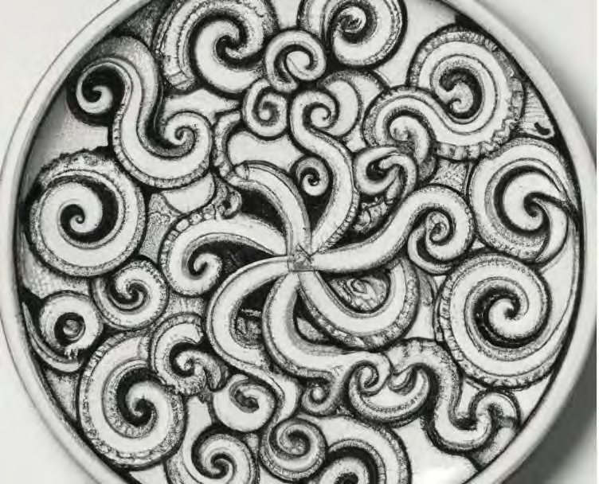

Schleifen
Joern Ploennigs · AI4SC
Titelbild mit konzentrischen Schleifen, generiert mit Midjourney nach einer visuellen Referenz auf Robert Delaunay
Warum Schleifen?
Manuelle Berechnung scheitert an der Datenmenge. Schleifen sind das Werkzeug für diese Skala.
Bodenproben
Baustelle
10.000 Proben auswerten
Sensormessungen
Monitoring
1 Million Messwerte pro Tag verarbeiten
Bauelemente
BIM-Modell
50.000 Elemente prüfen
Hörsaalfrage
Wie oft müssten Sie print() von Hand aufschreiben, um 10.000 Bodenproben auszuwerten?
Schleifen lesen — nicht nur schreiben
Wenn KI eine Schleife generiert, stellen Sie drei Fragen:
1. Worüber?
Liste, Dict, Zahlenfolge oder Bedingung?
Erkennen
2. Was ändert sich?
Welche Variablen ändern sich pro Iteration wie?
Verfolgen (Spur-Tabelle)
3. Terminiert sie?
Gibt es eine klare Abbruchbedingung?
Prüfen
Variablen aus Schleifen sind auch außerhalb der Schleife verfügbar. Python kennt zwei Schleifen: for und while.
Wiederholungen mit bekannter Anzahl

for-Schleife über eine Sequenz
Die for-Schleife wiederholt einen Block für alle Elemente einer Sequenz. e wird dabei immer mit dem aktuellen Element belegt.
for-Schleife mit Zähler
Klassisch n-mal wiederholen: range(n) erzeugt die Folge 0 bis n−1.
Dictionaries iterieren
for-Schleife Praxisbeispiel
Umrechnung einer Liste an Messwerten von imperialen Fuß in metrische Meter.
Spur-Tabelle: KI-Loop lesen
KI-generierter Code — erst lesen, dann ausführen!
Worüber iteriert die Schleife? Wie verändert sich summe pro Iteration?
Spur-Tabelle auf Papier ausfüllen:
| Iter. | t |
summe |
|---|---|---|
| 1 | ? | ? |
| 2 | ? | ? |
| 3 | ? | ? |
| 4 | ? | ? |
| Ende | — | ? |
Spur-Tabelle: Lösung
KI-Loop verifizieren
Drei Schritte, wenn KI eine Schleife generiert:
1. Identifizieren
Worüber iteriert die Schleife? (Liste, Dict, Zahlenfolge?)
2. Verfolgen
Die ersten zwei und die letzte Iteration durchlaufen.
3. Prüfen
Terminiert die Schleife? Gibt es eine klare Abbruchbedingung?
Merksatz
Nicht sofort ausführen: erst lesen, die ersten zwei und die letzte Iteration verfolgen, dann Terminierung prüfen.
Wiederholungen mit unbekannter Anzahl
while-Schleife
Die Bedingung wird vor jedem Durchlauf geprüft. Ist sie von Anfang an falsch, läuft der Block nie.
while vs. Do-While vs. Repeat-Until
Do-While und Repeat-Until sind in Python konzeptionelle Muster, die mit while nachgebildet werden.
while
Bedingung kann von Anfang an falsch sein: null Durchläufe.
Do-While
Bedingung wird am Ende geprüft: mindestens ein Durchlauf.
Endlosschleifen erkennen
KI generiert gelegentlich Endlosschleifen. Diese Zeichen verraten sie:
- Loop-Variable wird im Schleifenblock nicht verändert
- Bedingung kann logisch nie
Falsewerden - Kein
breakund kein Zähler als Sicherheitsnetz
Achtung
While-Schleifen ohne sichtbare Abbruchbedingung sind ein Risiko, besonders in KI-generiertem Code. Immer die Terminierung prüfen.
Endlosschleifen absichern
While-Schleifen haben keine maximale Wiederholungsanzahl. Sicherheitsbedingung immer hinzufügen:
Endlosschleife: Bedingung ändert sich nie
Schleife abbrechen und Elemente überspringen
Gesucht: das erste essbare Ding im Rucksack.
Endlosschleife mit Timeout-Abbruch
Mit break lassen sich zusätzliche Abbruchbedingungen realisieren, wie z.B. eine maximale Ausführzeit:
Programmflusskontrolle
Wir kennen nun zwei Werkzeuge:
Bedingte Ausführung
if,else,elif
Mehrfachausführung
while,for
Jedes Programm, was jemals auf einem Computer ausgeführt wurde, könnte mit diesen Mitteln geschrieben werden.
→ Schleifen als Algorithmus-Bausteine: siehe 09a_Algorithmen (S09)
Questions

Ingenieurs-
Informatik